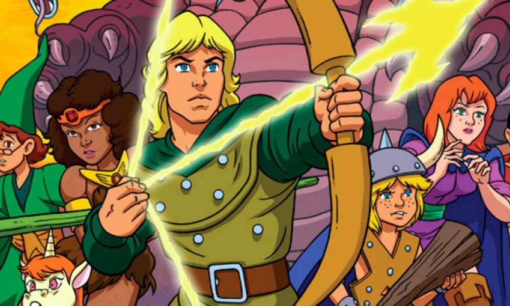
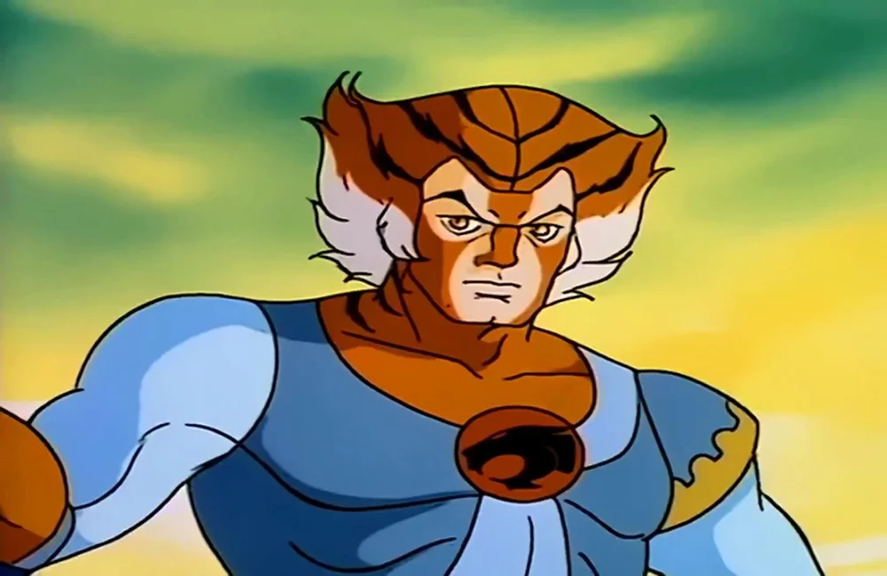
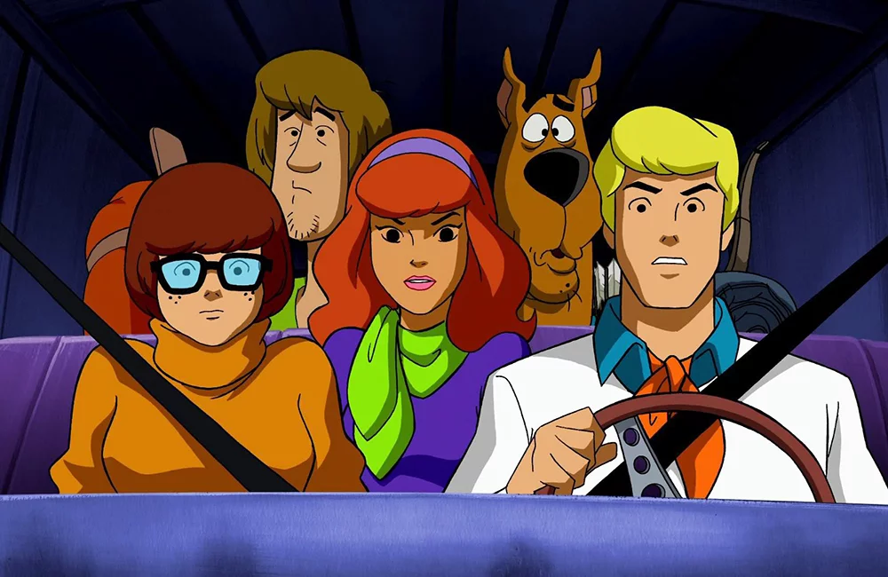
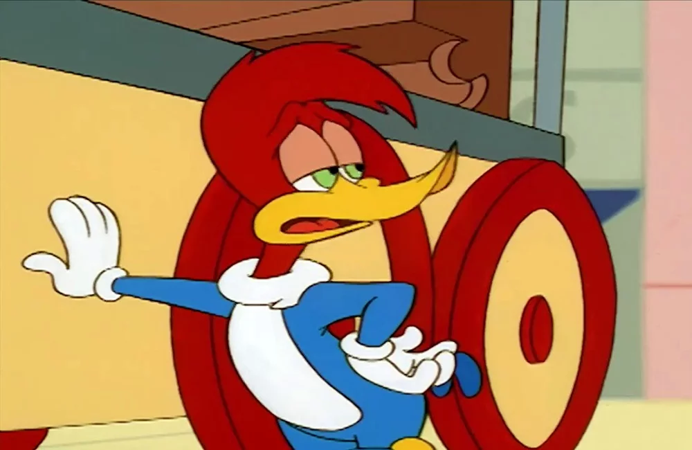
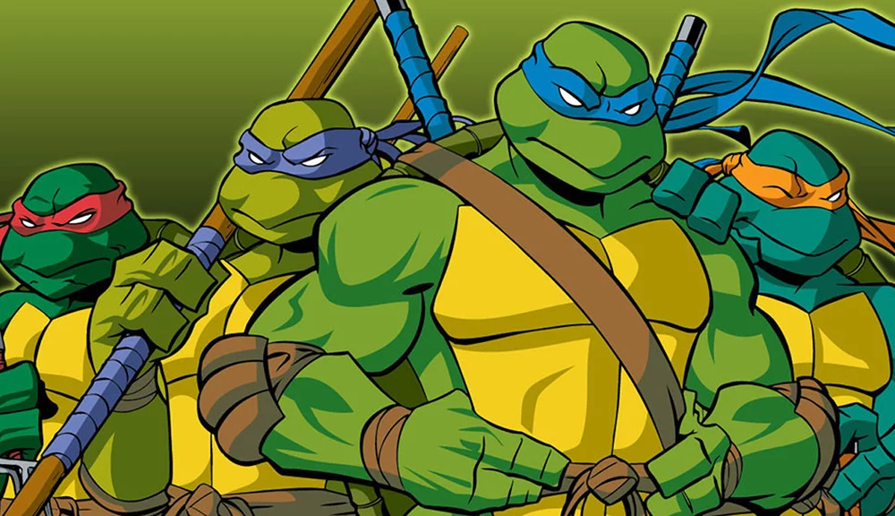

Caverna do Dragão (1983-1985)

Um dos grandes ícones dos desenhos animados da década de 1980...
ThunderCats (1985-1989)

A animação conta as aventuras de um grupo de felinos guerreiros...
He-Man e os Defensores do Universo (1983-1985)

A série de animação foi produzida pelo estúdio americano Filmation...
Scooby-Doo (1969-2015)

Scooby-Doo é o segundo desenho americano com o maior número de episódios...
Pica-Pau (1957-1972)

O icônico personagem foi protagonista de várias séries animadas...
As Tartarugas Ninja (1987-1996)

As quatro tartarugas mutantes vivem nos esgotos de Nova York...